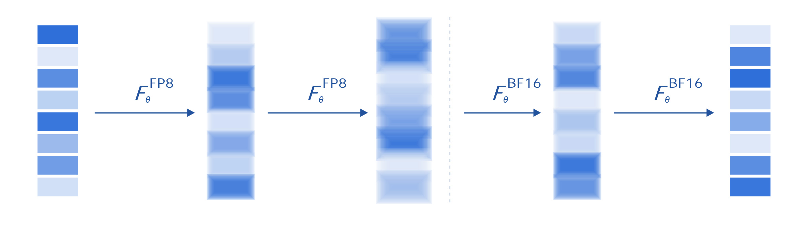
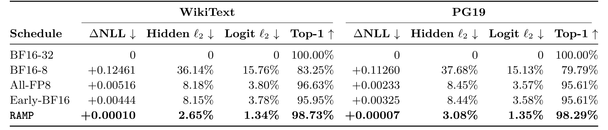
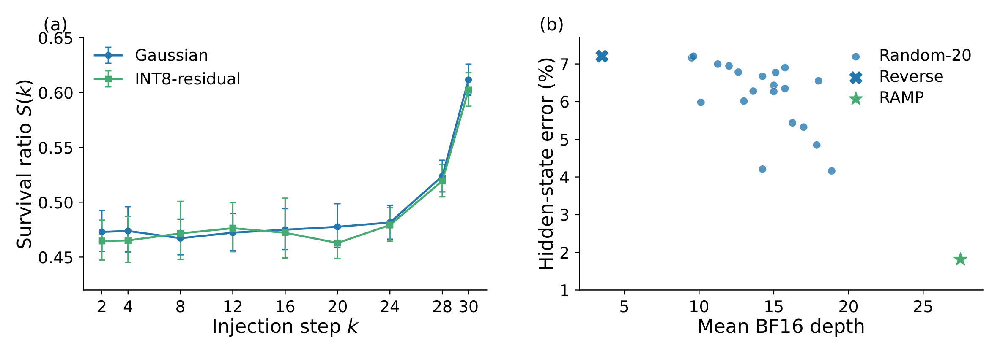
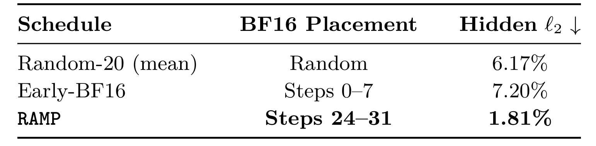
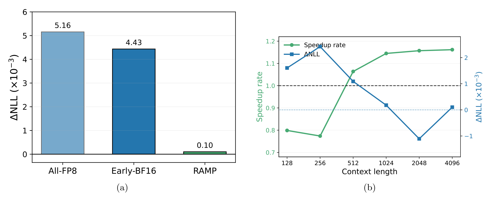
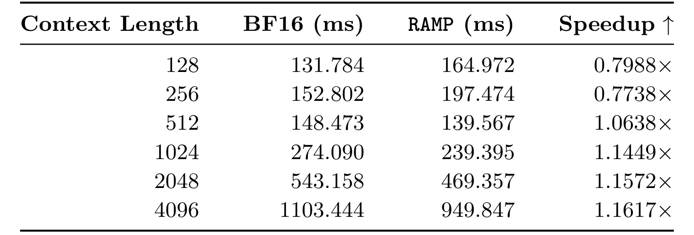
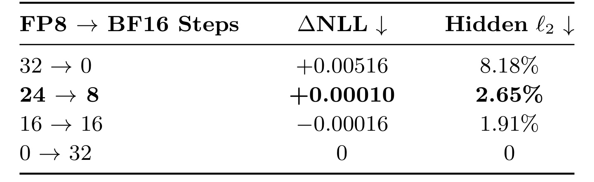
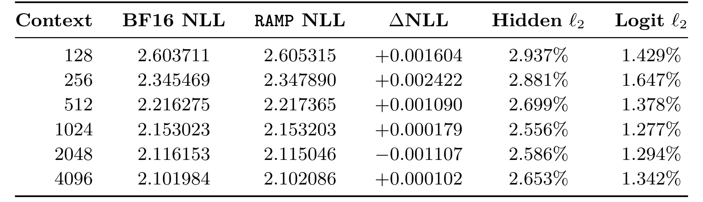
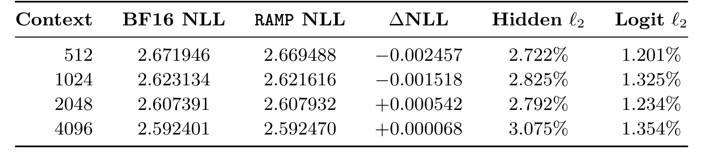

RAMP：循环深度语言模型中的先低后高精度预填充
弗吉尼亚大学计算机科学系的 Ke Wan 与 Chen Chen 在 2026 年 10 月 9 日公开了 RAMP，研究在循环深度语言模型中如何安排推理精度。论文入口为 RAMP 原文。截至 2026 年 10 月 13 日核验，未确认独立的官方实现链接；下述数值来自作者报告，尚未进行独立复现。它把同一个循环块的多次执行当作精度分配维度，在保留总循环深度的前提下，前段采用 FP8 权重与激活计算，末段恢复 BF16。
循环深度语言模型通过反复应用共享网络细化内部表示，但额外循环计算会增加推理成本，长上下文预填充尤其需要在每一步重复处理完整输入。权重与激活量化可以降低算术成本，却会反复引入沿循环轨迹传播的数值扰动；应如何安排低精度计算，才能在加速预填充时保留完整精度的表示保真度？
1. 背景和问题
1.1 循环深度把推理计算移到隐状态内部
常规语言模型的深度由不同参数的网络层构成，输入经过每一层后得到输出；循环深度模型则让一组共享参数反复处理隐状态。同一个变换在多次循环中不断细化表示，因此增加计算深度不一定需要增加参数，也不一定需要显式生成更多中间推理词元。论文讨论的对象是这种隐空间计算结构，而不是让一般语言模型多写几段思维链。两者都能增加推理时间计算，但耗时来源、可量化的对象和误差传播路径不同。若直接把普通前馈网络的量化经验搬到循环模型，就可能忽略同一误差经历多次共享变换后的变化。
这里的预填充指自回归生成开始前，对整个提示序列进行处理并产生首个输出词元所需 logits 的阶段。每次循环都处理整个输入序列，长输入使相同循环深度对应更大的矩阵工作量。循环计算带来的表示细化能力和延迟成本因此同时增长。对于部署端，首词元等待时间很容易直接影响交互体验；对于算法端，减少循环次数又可能削弱原模型在较深循环下得到的能力。作者希望保留完整循环轨迹中的有效计算，同时降低其中多数步骤的算术成本。这比简单地删掉前二十四步更有针对性，因为删步改变了计算图的深度，而混合精度保留了状态被反复更新的次数。
1.2 均匀量化为什么不是自然终点
权重与激活量化把矩阵乘法的两类操作数都映射到更低精度，具备使用硬件原生低精度算术的机会。只压缩权重未必能充分降低预填充中大量激活参与的计算成本，因此本文选择了权重与激活共同量化。不过，低精度输出通常与 BF16 输出存在数值差异。在循环模型里，本步带偏差的状态会继续作为下一步输入，下一步又可能引入新的量化扰动；最终输出的偏差既受到当步新误差影响，也受到此前偏差如何传播的影响。于是，全程都用相同低精度虽然实现整齐，却未必是同样预算下最保真的选择。
一个容易想到的方案是混合精度，但关键问题仍然没有解决：假设三十二次循环中只能保留八次 BF16，应该把它们安排在开头、结尾，还是交错分布？若只认为高精度能保护初始信息，便可能把 BF16 放在前面；若只看累计低精度次数，便可能认为各调度差不多。RAMP 的研究核心正是反驳这种位置无关的理解。它提出，后续循环若能在相关运行区域收缩小扰动，早期误差有更多机会衰减，而终末误差几乎没有后续恢复机会。因此，同样的八步高精度在末尾可能更有价值。这个解释依赖循环动力学的性质，并不是从量化位宽本身就能推出。
还需要区分表示恢复与真实答案正确。参考轨迹是同一个模型在三十二步 BF16 下的轨迹，量化轨迹越接近它，说明执行偏差越小，却没有说明 BF16 模型本身的推理答案一定正确。模型可能保持相同的错误预测，也可能产生微小数值差异但不改变最终答案。论文主要用语言建模似然、隐状态误差、输出误差与词元预测一致率观察执行保真，而未把这些指标扩展成数学题正确率、工具调用成功率或推荐点击率。阅读时必须保留这一目标定义，避免把接近完整精度误读为推理能力已经得到全面验证。
1.3 研究问题的边界与工程价值
本文需要隔离三个变量：低精度预算、精度位置、循环深度。全 BF16 与全 FP8 的比较主要说明量化带来的偏差；先八步 BF16 后二十四步 FP8，与相反顺序的比较主要说明位置作用；只运行八步 BF16 与完整 RAMP 的比较，则说明前二十四步 FP8 是否提供有效细化。若没有这些控制，末尾高精度有效可能只是因为多用了高精度，或者是最后八步就足以完成所有计算。作者针对这些替代解释分别设置对照，使结构简单的推理策略拥有相对清晰的证据链。
长上下文也是需要认真控制的实验变量。不同长度若评估不同的预测目标，损失变化既可能来自上下文增加，也可能只是续写内容难度改变。论文为同一评估端点构造嵌套上下文，保持最后六十四个目标词元一致，仅增加前面的上下文。这样的配对设计有助于观察低精度路径在输入变长时是否系统性偏离参照。不过，固定端点只覆盖有限语料位置，不能自动代表所有自然请求；尤其是检索问答、程序代码与跨文档长程依赖，可能具有不同的数值敏感性。本文只在最远四千词元范围内验证，不能把长上下文标签外推到十万词元。
对推荐系统从业者，这项工作的直接关联在于用于内容理解、用户解释或生成式推荐的大模型服务成本，而不是推荐排序模型本身已经完成实验。很多业务会在固定时延内分配有限计算预算，本文提供了一种关于计算位置的思路：先确认哪些误差能被后续变换修正，再安排精度。对于反复更新共享用户状态的模型，类似问题值得测量，但需要先验证更新算子是否具备论文依赖的局部收缩性质。将普通排序网络的深层直接类比成循环时间、或把 BF16 终末恢复类比成重排，都只能是研究假设，本文并未给出这样的迁移结果。
精度切换的系统成本同样属于问题本身。低精度算术更快不意味着整次请求更快，动态量化、数据处理和算子调度可能吞掉小矩阵上的收益。论文报告了一百二十八与二百五十六词元的实际变慢，这使贡献更像一个具有适用区间的推理优化，而不是默认启用就能加速的通用开关。它的价值在于把误差传播、固定预算对照和真实端到端预填充计时连接起来，让保真和效率都能按同一具体配置接受检验。
2. 方法
2.1 循环误差的局部传播
作者首先把完整精度执行作为参考，循环块输入是本步隐状态，输出是下一步隐状态。各步共享参数，而输入阶段和输出阶段负责把词元信息接入与读出。基础更新式保留了论文式一和式七的含义：
符号解释：$h^{(t)}$ 是第 $t$ 次循环后的隐状态；$F_{\theta}$ 是参数为 $\theta$ 的共享循环变换；$T$ 是总循环深度。输入处理产生 $h^{(0)}$，输出层读取 $h^{(T)}$。这里没有引入新的训练目标，也没有学习新的循环参数；RAMP 改变的是推理执行精度，所以这些模块在推理中全部保留。 线性运算的低精度替代把激活与权重分别量化，而不是只让参数以更小格式存储：
符号解释：$X$ 是激活矩阵，$W$ 是权重矩阵，$Y$ 是参考线性输出；$Q_A$ 与 $Q_W$ 分别是激活和权重量化器，$\widetilde{Y}$ 是低精度线性输出。该表达式对应原文式三至五，实际计算还需满足底层矩阵算子的格式要求。本文实现只让符合条件的循环块稠密线性运算进入 FP8，不能据此断言注意力缓存、全部中间状态和输出层都采用 FP8。 设量化与参考轨迹从相同状态出发，偏差由两部分组成：旧偏差经过参考变换后的传播，以及本步量化产生的新扰动。原文定理三点一要求相关运行区域满足局部收缩，并假定量化算子对该区域内输入具有统一误差上界：
符号解释：$x,y$ 是运行区域内状态；$\rho_t$ 是该步局部收缩系数；$\widetilde{F}_{\theta,t}$ 是量化循环算子；$\delta$ 是统一扰动界。这里的局部限定非常关键：定理没有证明任意输入下模型全局收缩。若部署输入使轨迹进入放大扰动的区域，下面的上界排序论证便不能直接套用。统一扰动界也将不同深度的量化难度简化到同一个保守界，而不是逐步刻画全部真实误差。 利用三角不等式，先加入并减去在量化状态上执行的参考算子，再分别应用上述两种界，就得到逐步递推与展开后的终末误差：
符号解释：$e_t=\|\widetilde{h}^{(t)}-h^{(t)}\|$ 为轨迹偏差；$q_t$ 为量化标志，取一表示该步量化，取零表示参考精度；$E(q)$ 为调度 $q$ 的终末误差上界。每个新扰动都乘上所有后续步骤的收缩系数，越早注入，乘积里越多小于一的因子。附录式二十三至二十九展开了这条推导；它说明前期误差能衰减，却不意味着每次循环实际误差严格单调减少，因为量化步骤仍会注入新误差。
2.2 固定预算中的先低后高排序
定理三点二在恰好 $K$ 步量化的条件下比较精度位置。因为早期误差对应的终末权重不大于晚期误差，选择最早的 $K$ 个位置会使统一上界最小。反向选择最后 $K$ 个位置则使上界最大：
符号解释：$K$ 是固定低精度步数；$w_i$ 是第 $i$ 步量化误差对终末上界的权重；$q^{\mathrm{RAMP}}$ 在最早 $K$ 步取一，$q^{\mathrm{Rev}}$ 在最后 $K$ 步取一。附录的证明将误差界看作从非递减权重序列中选出 $K$ 项，排序后前缀最小、后缀最大。被优化的是条件成立时的误差上界，而不是任意实际误差或所有下游指标的全局最优值。真实噪声方向、激活分布和局部收缩变化都可能使上界松弛。 末尾恢复高精度还有一个直接结果：相比全部量化，后段不再注入那些缺少衰减机会的新误差。原文式十八至二十给出两种界的差：
符号解释：$E_{\mathrm{AllQ}}$ 为全程量化上界，$E_{\mathrm{RAMP}}$ 为前 $K$ 步量化的上界。这个差额恰好对应被取消的晚期误差注入。BF16 阶段并非知道正确轨迹并显式校正，也没有额外误差补偿网络；它只是执行原来的共享算子，在局部收缩条件下让已有偏差更接近参照，同时避免继续引入 FP8 误差。因此恢复步骤仍执行正常的表示细化，而不是将末端状态替换成参考答案。
2.3 FP8 到 BF16 的推理路径
作者在 Huginn-0125 上实例化上述排序，默认总深度三十二、切换位置二十四。前期的符合条件的稠密线性运算使用 FP8 权重与动态量化 FP8 激活，循环隐状态、输入阶段、输出阶段和周边运算仍保留 BF16。推理调度对应原文式二十一至二十二：
符号解释：$p_t$ 表示第 $t$ 步执行精度；$K$ 为切换位置；$\widetilde h$ 表示混合精度轨迹。前二十四步使用量化算子，后八步沿相同状态链改用参考算子，总共只发生一次精度转换。调度按循环深度分配精度，并未根据每个请求实时学习切换点，名字中的自适应不应被解释成已有动态控制器。

图二从左到右展示一条连续的隐状态演化路径，箭头上方都是同一个共享变换符号，只是前两个示意箭头标记 FP8，后两个标记 BF16。中间的虚线表示精度切换点，虚线两侧状态仍连续传递，图中没有训练支路、教师模型或新的纠错模块。颜色与模糊效果帮助表达低精度细化后再恢复，但不是定量展示误差大小，不能把某个色块当作具体神经元概率。实际执行不是图里的四步，而是默认二十四步低精度接八步高精度；图仅压缩了反复调用相同算子的顺序。
读图时最需要关注的是箭头上的算术格式与状态本身的存储格式分离。前段不是整条系统都变成八位，隐状态仍是 BF16，只是合适的稠密线性矩阵乘法使用 FP8 权重和激活；由此，进入终末 BF16 段时不需要新增状态重建网络。预填充中的输入加工与输出读取仍沿原结构执行，图没有改变总循环深度，也没有跳过模型块。这个限制使策略容易描述，也使端到端收益受到非量化部分占比的约束：即使大部分循环线性运算加速，其他操作仍需付出原成本。
从该路径可以导出两个可检验预测。首先，若末尾高精度只是额外开销而没有恢复作用，那么同样二十四比八预算的反向调度也应同样保真；原文用反向对照否定了这一解释。其次，若只有最后八步有用，删掉前二十四步就该获得相近结果；八步 BF16 对照表现明显更差，支持前段仍在细化表示。系统实现还应测量单次切换和动态量化的实际开销，尤其是小输入下计算不足以摊薄这些成本的情况。图说明信息流，却不独立证明理论假设或加速幅度，后面的机制与效率实验才承担这些证据责任。
3. 实验结果
3.1 评测设计：保真与系统时间分别测量
全部主实验基于 Huginn-0125，参考路径为三十二步 BF16。WikiText 使用三十二个冻结评估端点，在同一结束位置构造一百二十八至四千零九十六词元的嵌套上下文，每个端点最后六十四个目标词元固定。PG19 使用三十二本冻结验证书，所有上下文都位于单篇文档内部，长度从五百一十二到四千零九十六词元，同样保持尾部六十四目标一致。负对数似然使用教师强制计算，配对差是混合精度损失减去同位置参考损失；原文以评估端点为单位做自举获得置信区间。隐状态和 logits 相对二范数误差观察中间与输出偏差，最高分词元一致率观察预测是否改变。
基线分别隔离不同因素：全三十二步 FP8 测试均匀量化；先八步 BF16 后二十四步 FP8 保持精度预算但反转顺序；只八步 BF16 则故意减少总深度。此外，二十个预先冻结的随机调度都恰好包含二十四步 FP8、八步 BF16，位置在观察结果前均匀采样。机制实验另有二十四提示队列，表征位置对照另有十二提示队列；它们并不是两套长上下文语言建模评测的同一批样本。保持这些队列区别，才能避免把主结果的误差百分比和机制对照数值混写。
3.2 四千词元主结果
表一集中回答保真是否恢复，并比较两个独立语料。每个数据集的指标都相对于自己的 BF16 三十二步参考，比较应在同一数据集内完成。

表一上方分别是 WikiText 与 PG19，内部列依次是负对数似然差、隐状态相对误差、logits 相对误差和最高分词元一致率。前三类越低通常表示越接近参考，最后一类越高表示越少改变词元选择。BF16 三十二步的零误差与百分之百一致是参照定义带来的结果，并不是该模型在真实语料上预测正确率百分之百。这一差别 在引用最高分一致率时尤其需要保留：RAMP 的百分之九十八点七三表示它与参考选同一个词元的比例，而不是答案正确率。
在 WikiText，全部 FP8 的似然差为正零点零零五一六、隐状态误差百分之八点一八、logits 误差百分之三点八零；RAMP 将这三项缩小到正零点零零零一零、百分之二点六五、百分之一点三四，并将词元一致率提高到百分之九十八点七三。反向调度虽然同样用了八步 BF16，隐状态误差仍为百分之八点一五，接近全部 FP8。固定预算下的差异因此有很强的表征级指向性。只有八步 BF16 的隐状态误差达百分之三十六点一四，也说明删掉前段循环无法维持相近轨迹。
PG19 呈现同方向的表征结果：RAMP 的隐状态和 logits 误差分别为百分之三点零八和百分之一点三五，全 FP8 对应百分之八点四五和百分之三点五七；最高分一致率从百分之九十五点六一提高到百分之九十八点二九。只八步 BF16 的误差依然远大于完整循环，支持低精度前段不是多余计算。不过，原文明确指出 PG19 上两种匹配预算调度的似然差异未被统计分辨。可以说表征排序清楚、多个保真指标整体相容，不能说 PG19 已证明 RAMP 显著降低语言建模损失。两个小型冻结队列支持策略有效，却还不是广泛下游任务的安全性认证。
3.3 精度位置与扰动存活
主结果之后，图一给出机制层面与随机调度的对应证据。此图在论文较早位置出现，但其语义是实验验证，所以放在这里与对照一起解释。

左面板横轴是扰动注入的循环位置，纵轴是终末仍残留的扰动比例；两条曲线分别来自高斯扰动与 INT8 量化残差扰动，误差棒是原文的百分之九十五置信区间。早期注入后的存活比例大致在零点四六到零点四八附近，接近末端注入时升到约零点六。这与后续循环越少、残留比例越高的直觉一致。不过中间位置曲线并非每点都严格单调，不能把图读成逐步严格收缩系数的直接测量。INT8 残差在这里作为扰动类型用于机制检查，主加速配置依旧是 FP8 与 BF16，不能改写成 INT8 部署结果。
右面板每个圆点表示二十个冻结随机调度之一，横轴是八个 BF16 位置的平均深度，纵轴是最终隐状态误差。将 BF16 平均位置后移，散点总体下降；最右的绿色星标是末尾八步 BF16 的 RAMP，误差明显低于全部随机调度；最左的反向标记把高精度放在开头，误差明显更高。所有调度的精度数量相同，这使差异能较直接归因于位置，而不是高精度预算更多。随机点仍有散布说明平均位置不是完整描述，具体间隔和状态敏感性也可能影响实际误差。
两面板共同构成从机制到策略的关联：先观察早期扰动有更多恢复机会，再观察把低精度放在早期的调度更加保真。但这仍不是对所有运行区域收缩条件的严格验证，冻结诊断队列只能支持其在评估输入上的合理性。高斯与量化残差的结果相近，缓解了结论只针对单一噪声形状的担心，却不覆盖极端激活、异常提示或其他模型结构。工程上若复用此策略，需要先测量自己模型的扰动存活曲线，再决定末端高精度预算，而不能只复制二十四比八这个默认数值。
精度位置对照的具体汇总列在表三，评测使用固定十二提示表征队列，和表一的长上下文语言建模样本口径不同。

表三的三行分别是二十个随机调度的平均、开头八步高精度、结尾八步高精度。第二列把 BF16 位置说清楚，第三列报告隐状态相对二范数误差。随机平均为百分之六点一七，反向为百分之七点二零，而 RAMP 为百分之一点八一。由于三行都是三十二次循环且都有二十四步 FP8、八步 BF16，数量本身解释不了这些差异。它更直接支持高精度末段比早段重要的判断，也给随机交错方案提供了具体参考，而不是仅与最差方向做二选一。
这里的百分之一点八一不应与表一 WikiText 的百分之二点六五视为矛盾或可平均的结果，因为一个是十二提示表征队列，一个是四千词元冻结端点语言建模队列。表三也只显示随机均值，并未在每个随机调度上给出方差或置信区间；逐调度关系要结合图一散点与正文描述阅读。作者另报告 RAMP 在固定一百二十八词元 WikiText 的配对似然，以及提示队列的最终 logits 误差上都优于每个冻结随机调度，但表三自身只直接呈现隐状态一列。引用时应把图表可见证据与正文补充结论区分清楚。
该对照的强项是改变变量单一，且随机位置在结果前冻结，避免事后挑选不利随机方案。其范围依然有限：二十个随机调度不等于穷举所有组合，定理才提供条件化的上界排序；真实指标的有限实验排序不能升格为全调度全输入严格最优。对于部署，优先选择单次切换还减少了精度格式频繁往返的复杂度，但这张表未测交错调度的系统时延，因此不能从误差优势推出对每个随机方案都有更大的加速。保真对照和延迟对照各有责任，需要分开接受检验。
3.4 保真与预填充效率
图三把长上下文质量和系统收益放在相邻面板，接着表二给出实际毫秒数。它们回答的是具体 H100 实现是否兑现收益，而不仅是低精度计算的理论成本。

左面板纵轴使用千分之一量级的似然差，三根柱依次为全部 FP8、前八步 BF16 的反向调度、RAMP；前两者约为五点一六与四点四三，RAMP 约零点一零。柱图再次强调相同预算若顺序不同，终末似然偏差可能相差很大。图上四点四三与表一正零点零零四四四的末位存在展示差异，应按表一的更完整数值引用，不应据末位显示构造新的改进比例。绿色柱也没有下降到数学上的零，作者主张是近似保留参考质量，不是逐位完全相同。
右面板横轴是输入上下文长度，绿色线读左纵轴，为 BF16 延迟除以 RAMP 延迟的加速比；蓝线读右纵轴，为配对似然差，注意两个纵轴单位不同。黑色水平虚线标记加速比一，绿色在线下表示变慢、在线上表示更快；蓝色的零参考则表示与 BF16 损失相同。随着长度增大，绿色从不足一升到约一点一六，而蓝色仍围绕零附近小幅波动。双轴图适合同时检查效率和保真，但不能把两条线交点理解为最佳切换位置，也不能按视觉斜率比较两种不同单位的敏感性。
这幅图说明长上下文的收益没有伴随 WikiText 似然偏差随长度系统性增长，但它没有画出同一队列的任务正确率，也没有画服务排队时间。蓝线在二千零四十八词元处略为负值，属于相对参考的小数值变化，不能解读为低精度让模型更聪明。绿色线只测 H100、单请求、原生 FP8 算术和优化的空缓存预填充路径，不能外推为其他 GPU 或高并发吞吐的统一收益。对工程读者，有价值的用法是同时检查自己的请求长度分布与保真容忍区间，再看这一交叉点是否落在大多数流量所在区域。
表二进一步展示短输入失败区间及长输入的稳定收益，避免只引用最好的四千词元点。

表二前三列分别是输入词元数、BF16 毫秒延迟和 RAMP 毫秒延迟，最后一列是两者相除的加速比。四千零九十六词元时，延迟从一千一百零三点四四四毫秒降到九百四十九点八四七毫秒，加速比一点一六一七，对应时延减少约百分之十三点九。这里加速比增加百分之十六点一七与延迟减少百分之十三点九使用不同分母，不能混写。到一千零二十四和二千零四十八词元，加速比分别为一点一四四九与一点一五七二，说明长输入收益较稳定，并非只有最长点偶然获利。
短输入则给出相反结论。一百二十八词元 BF16 为一百三十一点七八四毫秒，RAMP 为一百六十四点九七二毫秒；二百五十六词元对应一百五十二点八零二与一百九十七点四七四毫秒。加速比分别只有零点七九八八、零点七七三八，即实际变慢。原文将其解释为低精度执行开销相对小矩阵循环计算过大，输入增长后才被更大的计算负载摊薄。在五百一十二词元已出现一点零六三八的收益，所以此实现交叉区间位于二百五十六至五百一十二之间，但不能把五百一十二当作任何硬件的普适启用阈值。
计时起点是词元编号已在 GPU 上且注意力缓存为空，终点是产生首个生成词元所需 logits；不包含分词、数据加载、主机到设备传输、网络开销或后续自回归解码。BF16 与 RAMP 使用相同的语义保持优化路径，去掉逐词元缓存管理，避免比较两种实现路径的偏差。因而作者所称端到端是在模型首轮预填充边界内成立，而不是用户从提交请求到收到回复的整段服务时间。表格还出现二百五十六到五百一十二词元 BF16 时延略降的现象，提醒小规模计时可能受系统开销与算子区间影响，不能仅靠理想线性成本模型解释每个点。
3.5 终末高精度长度
前面的匹配预算对照说明位置重要，表四进一步改变末尾高精度长度，观察默认八步恢复是否有足够收益。

表四第一列用低精度步数到高精度步数的形式标出预算，三十二比零是全部 FP8，二十四比八是默认 RAMP，十六比十六将高精度段加倍，零比三十二是参考。所有配置总循环深度一致，所以表征差异主要与精度分配数量和切换位置有关。隐状态误差依次为百分之八点一八、百分之二点六五、百分之一点九一和零，显示末段八步已经消除大部分相对全 FP8 的偏差，继续增加 BF16 仍能降低误差，但边际恢复较小。
似然差由正零点零零五一六降到正零点零零零一零，十六步 BF16 进一步变为负零点零零零一六。负值只意味着在这批固定目标上损失略低于参考，不等于方法改善了模型能力，也不说明负值越大越好。若以表示保真为目标，负损失变化仍可能伴随非零状态偏差；因此作者同时保留二范数指标，而不是仅以一个小负值宣称超过 BF16。表中没有每种切换配置的时延列，不能把误差下降和速度下降拼成已测得的完整收益曲线。
默认二十四比八的选择体现了将四分之三循环线性运算放到低精度、末尾保留足够恢复的折中。它并未通过对所有切换点与所有语料全面搜索得到唯一最优，也没有按单个请求预测最佳恢复长度。不同模型或输入可能需要更长末段，若缺少局部收缩甚至难以恢复；这些问题要结合实际扰动与保真测量判断。部署复现时，应同时扫描误差、延迟和显存，而不是只复现此表的状态误差。该消融支持短末段能恢复较多保真，却没有把八步写成保证条件，也没有证明低精度覆盖越大越好。
3.6 固定预测目标下的跨上下文验证
附录表五与表六保留全长度数字，进一步检查主文曲线是否掩盖长输入累积偏差。

表五列出六种长度，BF16 与 RAMP 的负对数似然并列，后面给出配对差、隐状态与 logits 相对误差。两种路径的损失都会随更多前文降低，例如 BF16 从约二点六零到二点一零，这反映固定目标得到更多上下文，而不是方法改变了训练目标。相对损失差在正零点零零二四二二到负零点零零一一零七范围内变化，没有随上下文增长出现持续变大的趋势。四千零九十六词元的差为正零点零零零一零二，和主表精度较少的数字一致。
隐状态误差约在百分之二点五六至百分之二点九四，logits 误差约在百分之一点二八至百分之一点六五，没有随长度增至四千词元出现同量级累积。该结果支撑末段恢复在已测范围内具有稳定作用。这里三十二个端点的尾部目标固定，使长度比较更干净，却也意味着样本多样性不随长度增加；不能因为最长上下文含更多词元就把它当作更多独立测试样本。冻结设计保护了配对可比性，同时限制了统计代表性，这两点应一起记录。
两个路径的绝对损失随长度下降，与两条路径之间的偏差是否保持稳定，是不同问题。前者说明上下文可能有帮助，后者才是量化保真的核心。二千零四十八词元出现负差并未伴随隐状态误差归零，所以不能声称 RAMP 产生更优的标准轨迹。原文也没有报告超出四千词元的稳定性，不能据曲线平坦预测任意长度下误差都不会增长。对长上下文部署，应把更长输入与复杂依赖任务加入单独验证，而不是借助稳定曲线省略这些测试。

表六来自三十二本冻结 PG19 验证书，范围五百一十二至四千零九十六词元，所有嵌套上下文都在同一文档内并保留相同尾部六十四预测目标。五百一十二与一千零二十四词元的似然差分别为负零点零零二四五七、负零点零零一五一八；二千零四十八和四千零九十六变为很小正值。这个符号变化使简单的无损或提升叙述都不准确，更合理的解释是量化相对参考产生小数值偏差，且向更长上下文有轻微正向趋势。作者明确要求不要把短上下文负差当作能力提升证据。
表征指标提供另一条稳定性证据：隐状态误差由百分之二点七二二到百分之三点零七五，logits 误差在百分之一点二零一至百分之一点三五四之间。相较全 FP8 主结果，它们仍明显更接近 BF16。PG19 与 WikiText 的独立构造减少了只在单一语料特殊端点有效的担心，但两者仍都是语言建模语料，不能充当问答、复杂推理或推荐交互评估。三十二本书与固定尾部目标也不足以证明对所有书籍主题与文档结构都稳定，更不包含多文档检索噪声或工具返回内容的分布。
这张附录表展示了可复制的配对评测思路：先固定预测目标，再扩展前文长度，最后比较低精度与参考的连续偏差。对于量化系统，先关注连续指标能更早发现数值漂移，单看最高分词元一致可能漏掉概率分布变化。不过，表格点估计本身不能决定小差异是否显著，尤其原文已声明 PG19 匹配预算的似然差未统计分辨。综合主表、位置对照和上下文结果，可以保守地支持末段高精度在此模型上恢复表示保真，同时明确统计力度、任务覆盖和硬件外推的限制。
4. 总结
4.1 对贡献的判断
RAMP 值得精读的贡献是把循环时间中的误差可恢复性转化成极简精度调度，并用固定预算对照排除高精度数量更多这一解释。定理提供的是局部收缩条件下的上界顺序，实验提供的是特定模型上的保真与效率实证，两者衔接清楚但不能相互代替。前期 FP8 仍执行有效状态细化，末期 BF16 继续执行原共享算子，不引入额外训练或纠错网络。这样的策略改动很小，适合成为循环模型部署的基线；其价值也恰在于能清楚看到适用范围，而不是把全部量化问题都归约到一个开关。
对推荐系统与内容理解服务，个人判断是先把它作为共享状态反复更新场景的测量范例。若业务使用循环语言模型处理长提示，保真恢复与首词元延迟的联合评测具有直接参考价值；若业务是普通前馈排序网络，应该先验证是否存在相似的误差恢复结构，再考虑借鉴。迁移后的点击率、排序一致性、生成输出正确性都需要重新测量，不能由本文的词元一致率推导。对短输入占多数的服务，还要用长度分布加权估算总体收益，因为已测短输入变慢可能抵消长输入的局部加速。
4.2 局限与复现方向
第一，理论依赖相关运行区域的局部收缩与统一扰动界，诊断队列没有证明全分布条件成立，极端激活和异常提示可能破坏恢复。第二，主要实验只有 Huginn-0125 与默认三十二步循环，其他循环结构、步数和动态停止策略的效果尚不清楚。第三，质量以教师强制语言建模与相对轨迹指标为主，没有推理题、代码、工具调用或推荐业务指标；保真足以支撑执行近似的判断，却不足以代替任务验证。第四，PG19 小似然差的统计区分有限，负差不代表性能更好，不能靠点估计推出显著性。第五，效率只有 H100 单请求空缓存预填充，不包含完整服务链路与后续解码，且一百二十八、二百五十六词元变慢，启用区间需要针对硬件重新测量。
后续首先应复现冻结端点与尾部目标设计，同时增加多种下游任务，将连续误差与答案改变率连接起来；原因是小数值差可能在某些推理分支上放大，而词元级平均掩盖重要失败。其次应扫描总循环深度、切换位置与请求长度，同时报告延迟和保真，检验八步恢复的默认折中是否稳健；现有消融只报告质量，仍缺完整可部署的收益曲线。第三应在不同硬件、批量与并发请求下测量动态量化和切换开销，把用户首词元时间纳入，判断模型内加速能兑现多少服务端收益。
进一步的研究方向是按请求状态估计恢复需求，但这是个人提出的延伸，原文没有实现动态控制器。若尝试，应先确认观测信号能够预测晚期误差，避免为了实时决策增加更多开销。还可以扩大扰动类型和长输入范围，测出在哪些输入上局部收缩失效，并保留统一 BF16 回退路径。这样才能把条件化理论、有限样本的机制观察与真实线上输入连接起来，而不是只复用一个平均加速数字。
复现还应固定量化内核版本与两条路径的缓存处理方式，报告热身、计时重复次数和离散程度。原文采用相同优化路径是公平比较的重要条件；如果只给混合精度实现做缓存优化，所得收益便混入了实现差异，不能再归因于精度排序。